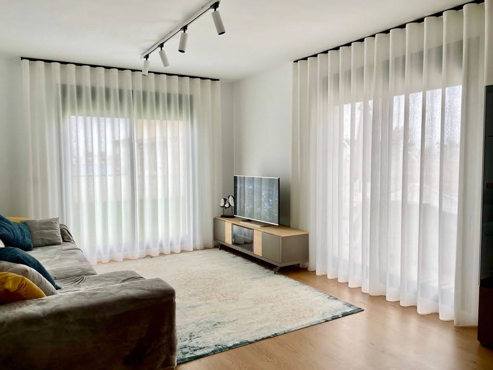
Salones vestidos a medida
Visillos amplios, onda perfecta y una caida limpia para filtrar la luz de Valencia sin perder elegancia ni amplitud visual.
Ingama Textil
Asesoramos, medimos, confeccionamos e instalamos soluciones textiles para vivienda, comercio y hoteleria, combinando oficio artesanal y sistemas modernos.
Proyectos reales fotografiados en vivienda, hoteleria y espacios comerciales para mostrar como trabajamos la luz, la caida y los acabados.
Ver catalogo completoTrabajamos estores, paneles japoneses, venecianas, barras, rieles, tejidos antiaranazos, tapiceria y toldos a medida con un servicio integral que va de la idea al montaje final.

Visillos amplios, onda perfecta y una caida limpia para filtrar la luz de Valencia sin perder elegancia ni amplitud visual.
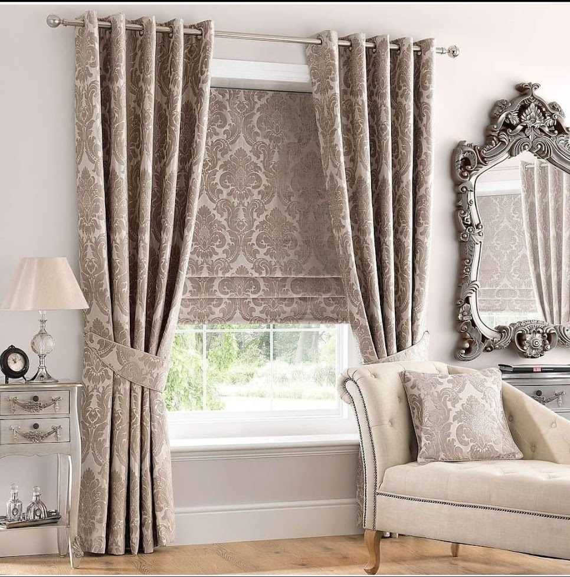
Seleccionamos tejidos y confecciones que decoran el hueco con la misma importancia que el mueble o la iluminacion del ambiente.
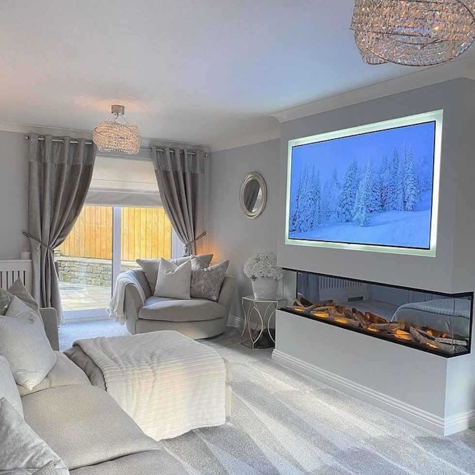
Combinamos tejidos y sistemas para graduar entrada de luz sin renunciar a confort visual y privacidad.
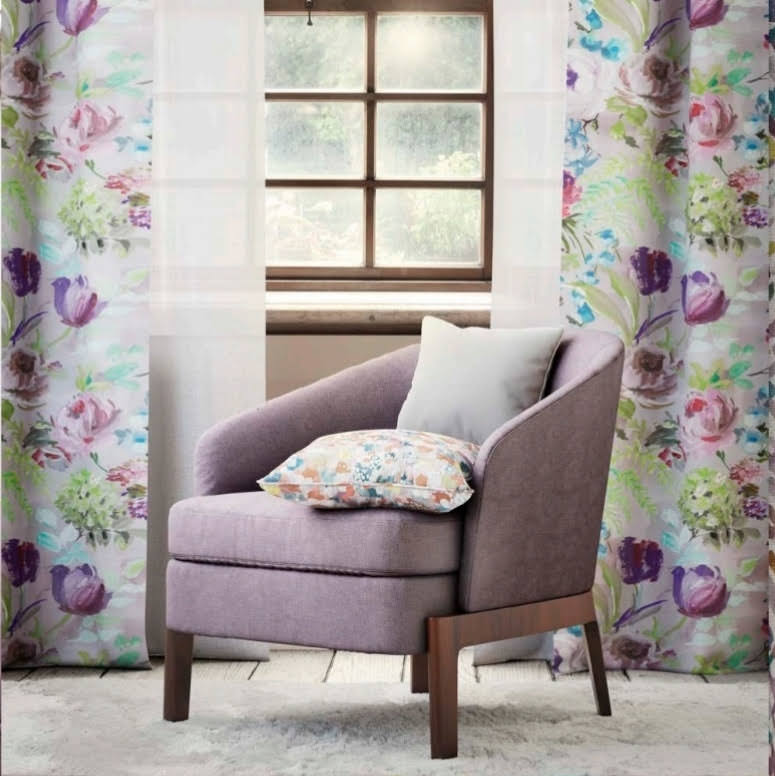
Renovamos butacas, sofas y cabeceros con tejidos que aportan tacto, resistencia y una imagen totalmente nueva.
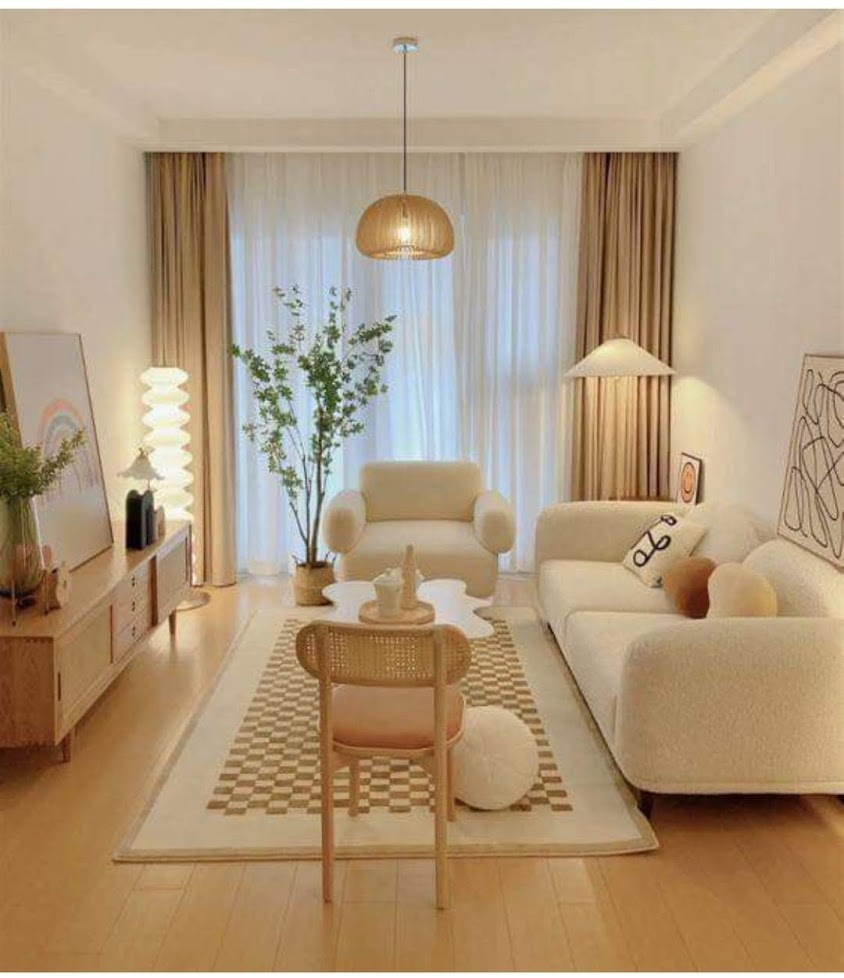
Trabajamos capas de visillo, caida lateral y tonos neutros para conseguir interiores acogedores y bien equilibrados.

Instalaciones discretas y faciles de mantener, pensadas para el uso real de cada habitacion.
Taller propio para tiempos de entrega cortos y calidad estable.
Montaje profesional y ajuste fino para cada sistema textil.
Flujo directo de medicion, produccion y colocacion final.
Decadas en decoracion textil residencial y contract.
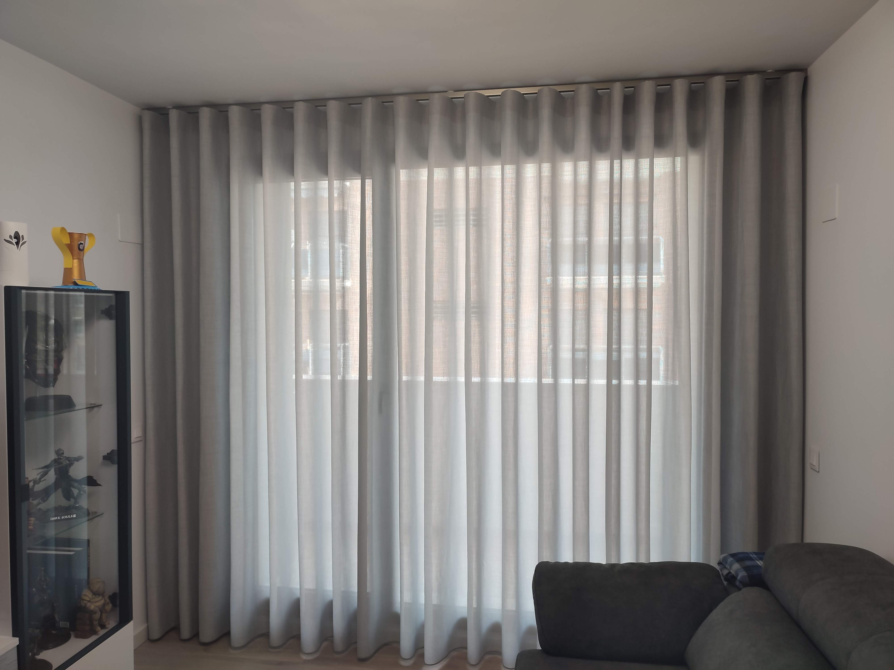
Ondas, visillos y opacos combinados segun la luz y el uso.

Textiles con caida suave para estancias calidas y serenas.
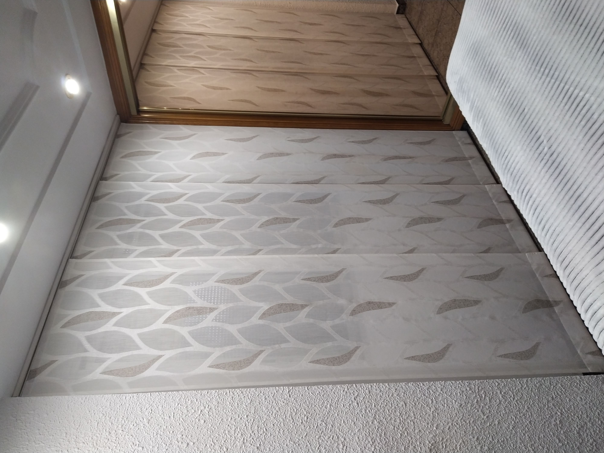
Lineas limpias para ventanales amplios y separacion ligera.

Control solar practico, resistente y muy facil de mantener.

Privacidad graduable con una imagen actual y ligera.
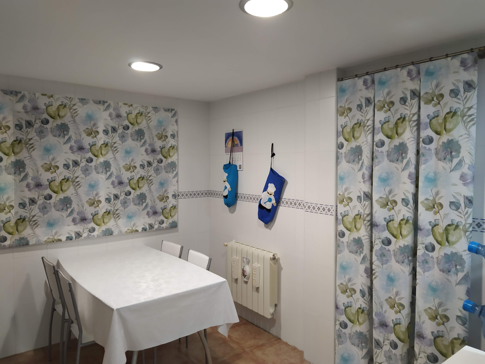
Prestacion tecnica, control visual y opcion de personalizacion.

Herrajes que rematan la ventana con caracter y estabilidad.
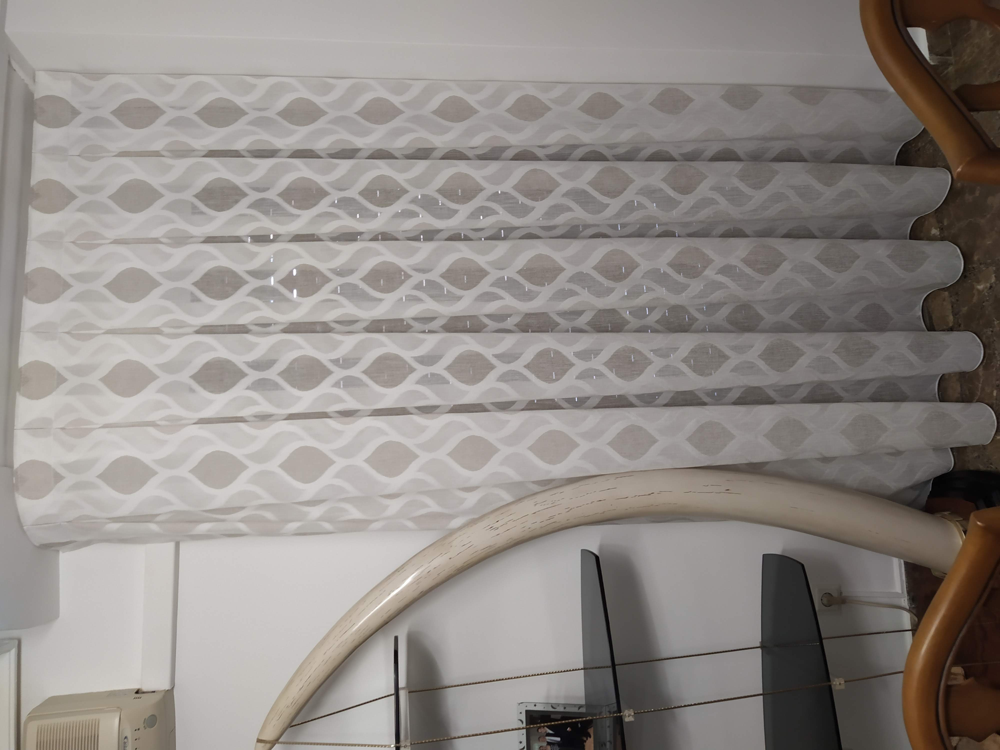
Deslizamiento suave y discreto para tejidos ligeros o pesados.
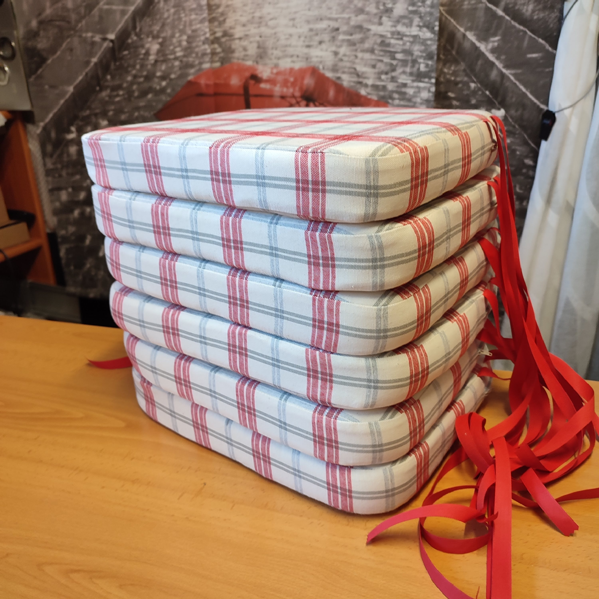
Sofas, butacas y cabeceros renovados con tejidos actuales y detalles cosidos a medida.
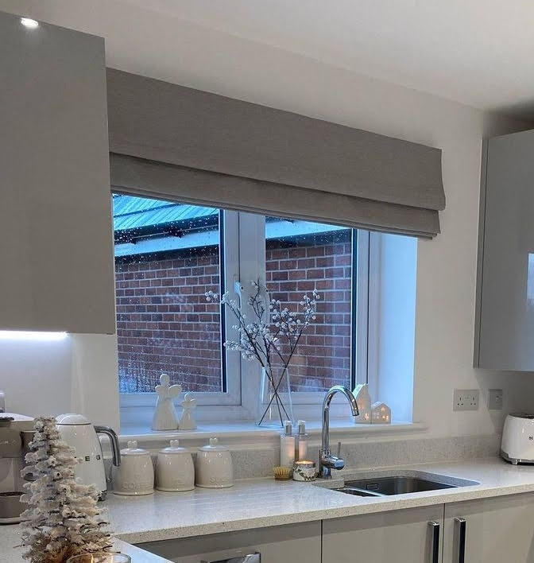
Dormitorios coordinados para sumar confort y armonia visual.
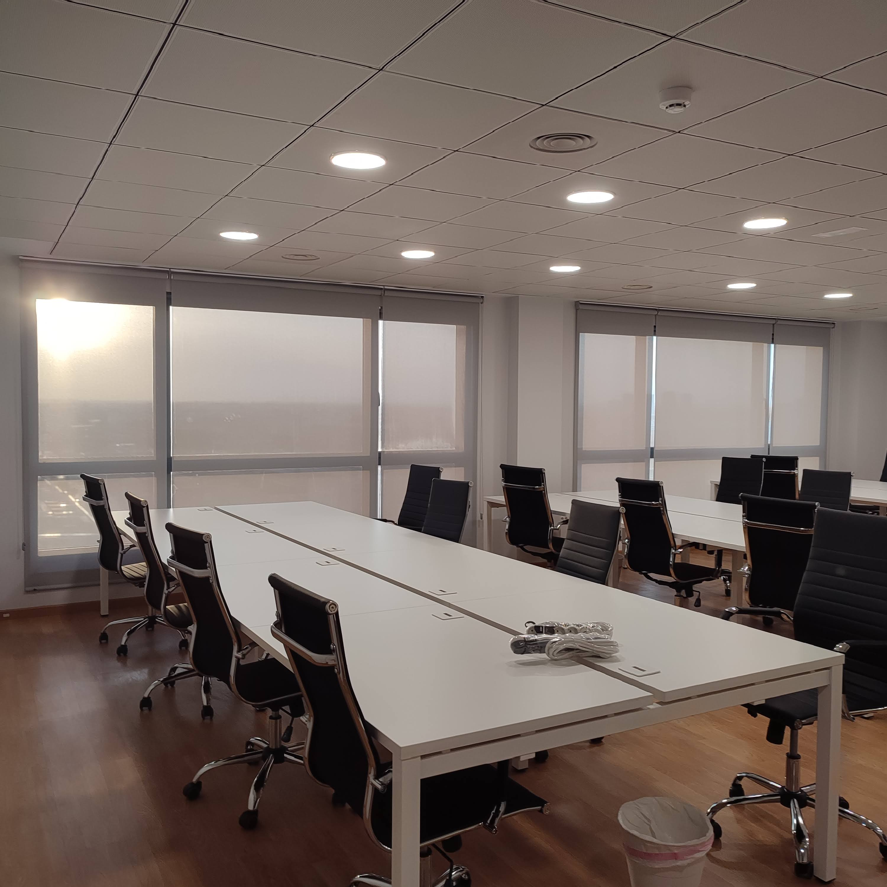
Textiles certificados para habitaciones y zonas comunes.

Motorizacion y escenas para controlar luz y privacidad.

La eleccion del tejido y el sistema de colgado depende de la orientacion de la ventana, la luz natural disponible y el ambiente que se quiere conseguir. Un visillo ligero combinado con una tela opaca permite regular la privacidad segun el momento del dia. El tipo de arrastre, ya sea onda perfecta, plisado o recto, cambia por completo el caracter visual de la cortina. Durante la visita de medicion valoramos cada opcion contigo para que la decision sea la mas acertada.
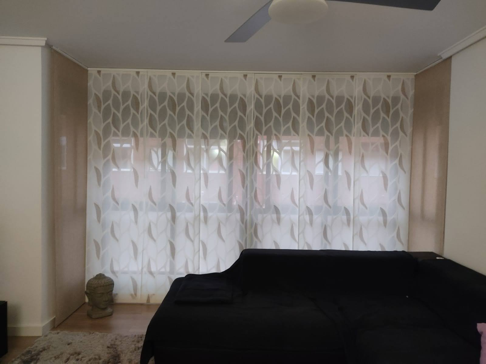
Los paneles japoneses ofrecen lineas limpias y funcionan especialmente bien en ventanales corridos o como separadores de ambientes. Los estores enrollables, en cambio, permiten una graduacion precisa de la luz con un mecanismo compacto que no interrumpe la arquitectura del hueco. Ambas soluciones admiten motorizacion. La eleccion depende del tejido que mejor encaje con la decoracion y del nivel de oscurecimiento requerido en cada estancia.

Para uso intensivo recomendamos tejidos con tratamiento antimanchas o fibras tecnicas como el lino sintetico y las mezclas de poliester de alta densidad. Con mascotas funcionan mejor las texturas planas y tramas apretadas que no se enganchan. En cabeceros y banquetas, los terciopelos con respaldo resisten muy bien el roce diario. Siempre ofrecemos muestras para que puedas valorar el tacto y la resistencia antes de confirmar el tejido.